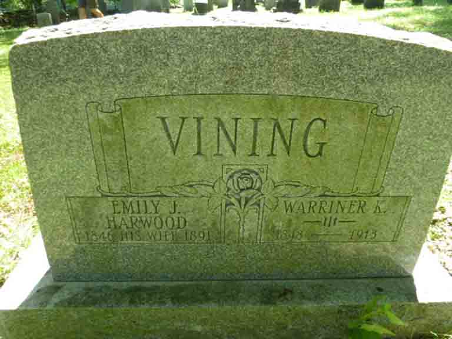

Documentation for Warriner King Vining - (1) Emily Jane Harwood; (2) Rosie Belle Hubbard
Death Data
Headstone for Warriner King Vining and Emily Jane (Harwood) Vining, in Bozrah Cemetery, Hawley, Franklin County, Massachusetts:
